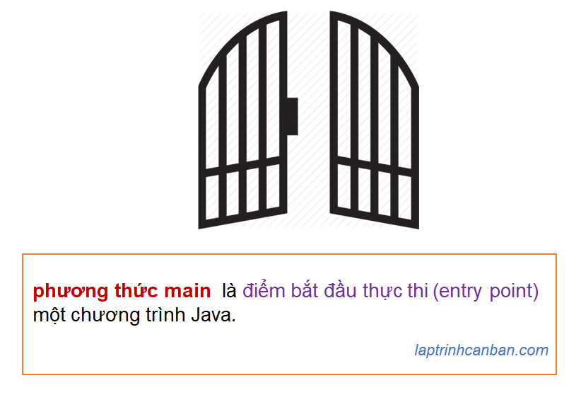

Cùng tìm hiểu về phương thức main trong Java. Bạn sẽ học được khái niệm phương thức main trong Java là gì, 5 điều kiện của phương thức main, cách viết phương thức main cũng như các lỗi hay gặp, các lưu ý về class chứa phương thức main cũng như đối số String[] args sử dụng trong phương thức main sau bài học này.
Phương thức main trong Java là gì
Trong các ngôn ngữ lập trình nói chung, tùy thuộc vào việc chương trình được bắt đầu thực thi từ ở đâu và như thế nào mà chúng ta có thể chia thành hai loại sau.
- Bắt đầu thực thi chương trình tại một điểm vào (entry point) như hàm/phương thức/thủ tục được xác định bởi các đặc tả của ngôn ngữ.
- Bắt đầu thực thi chương trình theo thứ tự viết lệnh, từ dòng đầu tiên đến dòng cuối cùng của chương trình
Trong 2 loại trên thì ngôn ngữ Java thuộc loại đầu tiên, một chương trình Java sẽ được bắt đầu tại một hàm/phương thức/thủ tục (entry point) được xác định bởi các đặc tả của nó như cách đặt tên hàm, đối số, hay modifier.
Và phương thức main trong Java chính là điểm vào (entry point) khi thực hiện xử lý trong Java, nói cách khác phương thức main chính là điểm bắt đầu thực thi một chương trình Java.

Đồng thời, khi phương thức main kết thúc cũng là lúc kết thúc chương trình. Các phương thức khác phương thức main không có vai trò gì trong chương trình cả, trừ khi chúng được gọi bên trong phương thức main.
5 điều kiện của phương thức main trong Java
Trong Java, một phương thức để trở thành phương thức main phải thỏa mãn 5 điều kiện sau đây:
Access Modifier phải là public.
Phải là static method.
Giá trị trả về phải là void.
Tên phương thức phải là main với các chữ cái phải viết dưới dạng chữ thường.
Đối số của phương thức phải là mảng String (hoặc là String có độ dài có thể thay đổi). Tên đối số có thể đặt tự do
Và, tương tự như các phương thức thông thường thì phương thức main phải thuộc một class nào đó trong chương trình.
Tóm lại thì phương thức dùng làm main phải thỏa mãn public static void main(String[]).
Cách viết phương thức main trong Java
Để thỏa mãn các điều kiện trên thì phương thức main phải được viết với cú pháp cơ bản như sau:
class Main { |
Ở đây, args là viết tắt của arguments, nghĩa là đối số trong Java. Do có thể tự do đặt tên đối số, nên chúng ta không nhất thiết phải dùng tên args mà có thể đặt bằng các tên khác như sau:
class Main { |
Ngoài ra, thay vì mảng string String[] args thì chúng ta cũng có thể sử dụng một String có độ dài có thể thay đổi khi viết phương thức main trong Java. Ví dụ cách viết phương thức main sau đây cũng được chấp nhận.
class Main { |
Lại nữa, bất kỳ kiểu phương thức nào thỏa mãn điều kiện của phương thức main thì đều có thể trở thành phương thức main, nên các phương thức có đặc tính như final hay synchronized, hoặc là phương thức throws như sau đều có được dùng làm phương thức main trong Java:
class Main { |
Cuối cùng, nếu trong một chương trình tồn tại một phương thức khác trùng tên với phương thức main, thì phương thức nào có đối số thỏa mãn điều kiện thì sẽ được chọn làm phương thức main của chương trình.
class Main { |
Một số lỗi hay mắc khi viết phương thức main trong Java
Khi chúng ta viết phương thức main trong Java mà bỏ qua một số điều kiện nào đó trong 5 điều kiện trên, thì mặc dù việc biên dịch chương trình không xảy ra lỗi, nhưng khi chạy chương trình thì lỗi sẽ bị trả về.
Bởi vậy hãy chắc chắn không bị lỗi cú pháp hay bỏ qua bất kỳ điều kiện nào khi viết phương thức main trong Java.
Dưới đây là một số lỗi cú pháp mà chúng ta hay mắc phải.
Quên chỉ định Access Modifier là public
class Main { |
Quên chỉ định kiểu phương thức là static
class Main { |
Quên chỉ định giá trị trả là void
class Main { |
Viết tên phương thức thành dạng chữ hoa
class Main { |
Quên chỉ định đối số kiểu mảng String
class Main { |
Chỉ định thừa các đối số khác ngoài đối số chính
class Main { |
Class chứa phương thức main trong Java
Giống như các phương thức thông thường khác thì phương thức main trong Java cần phải thuộc một class nào đó.
Tuy nhiên class chứa phương thức main không nhất thiết phải thuộc kiểu public, và cũng không có quy tắc nhất định nào về kiểu class cả. Yêu cầu duy nhất là phương thức dùng làm main phải thỏa mãn public static void main(String[]) mà thôi.
Ví dụ, các kiểu class sau đây đều có thể được dùng để chứa phương thức main.
// class trừu tượng abstract cũng dùng để chứa phương thức main |
// interface cũng dùng để chứa phương thức main |
// enum cũng dùng để chứa phương thức main |
String[] args trong Java là gì
String[] args là đối số mặc định trong phương thức main trong Java, có tác dụng nhập các chuỗi được phân tách bởi khoảng trắng từ thiết bị đầu cuối như bàn phím chẳng hạn vào chương trình Java.
Trong một chương trình Java thì có thể có hoặc không có giá trị nào được nhập từ thiết bị đầu cuối vào chương trình, tuy nhiên chúng ta vẫn phải chỉ định String[] args (hoặc là Sring có độ dài có thể thay đổi) làm đối số mặc định trong phương thức main trong Java.
String[] args trong Java được sử dụng chủ yếu khi chúng ta chạy chương trình đồng thời với việc truyền các giá trị cần nhập vào chương trình.
Ví dụ cụ thể, chúng ta có chương trình Java sau đây:
class Main { |
Với chương trình này, sau khi đã biên dịch xong thì chúng ta có 2 cách chạy chương trình như sau:
Cách 1: Chỉ chạy mà không nhập giá trị
D:\code\java>java Main |
Cách 2: Chạy chương trình đồng thời nhập giá trị
D:\code\java>java Main 123 "abc" "456de" "ghk" |
Tổng kết
Trên đây Kiyoshi đã hướng dẫn bạn về cách sử dụng phương thức main trong Java rồi. Để nắm rõ nội dung bài học hơn, bạn hãy thực hành viết lại các ví dụ của ngày hôm nay nhé.
Và hãy cùng tìm hiểu những kiến thức sâu hơn về Java trong các bài học tiếp theo.
HOME>> java cơ bản cho người mới bắt đầu>>04. kiến thức cơ bản về java